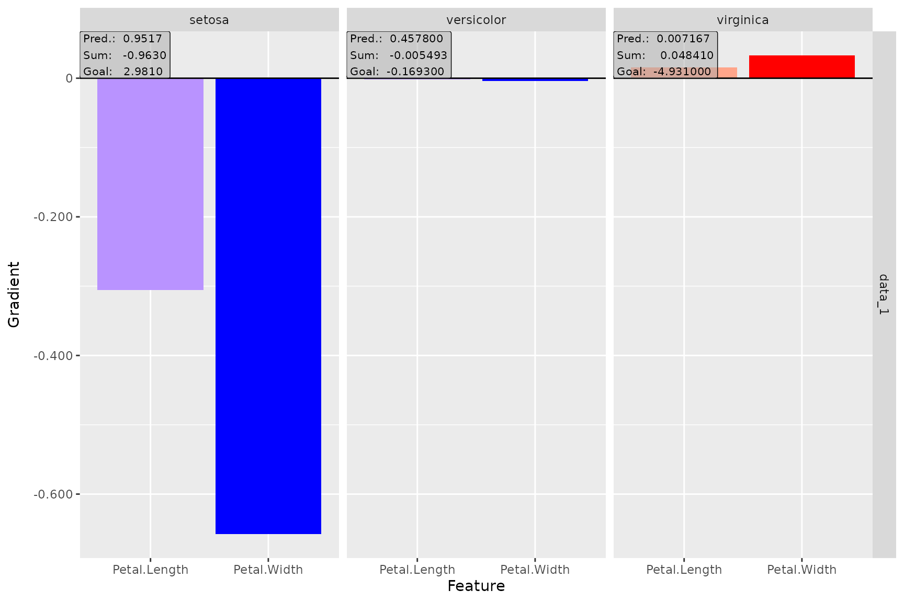
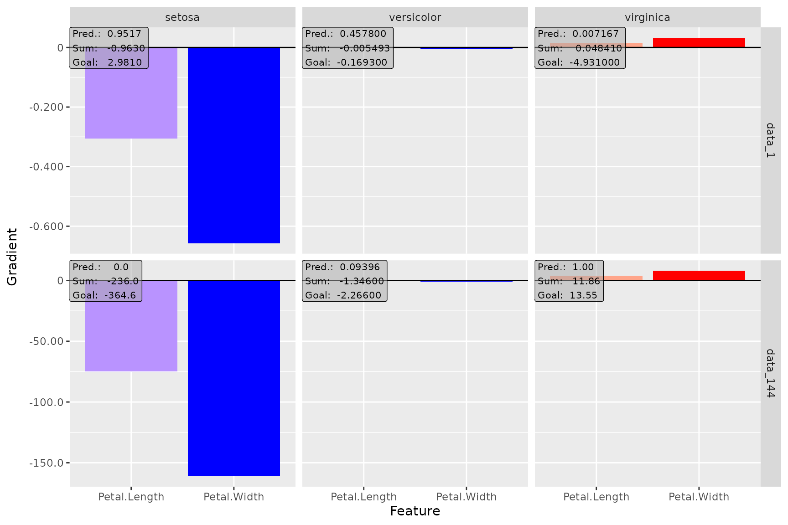
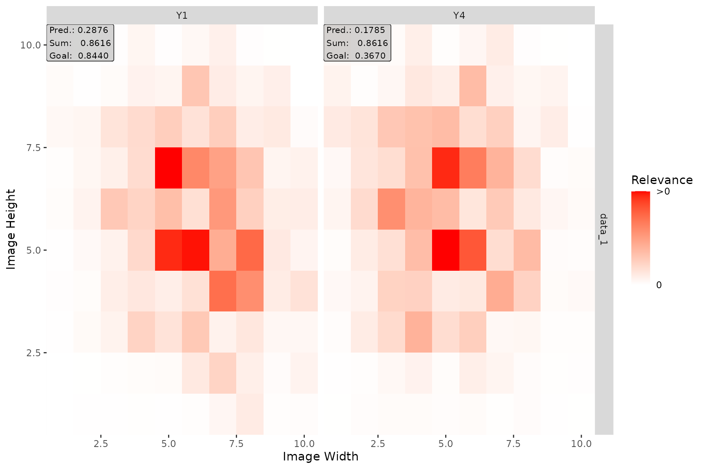
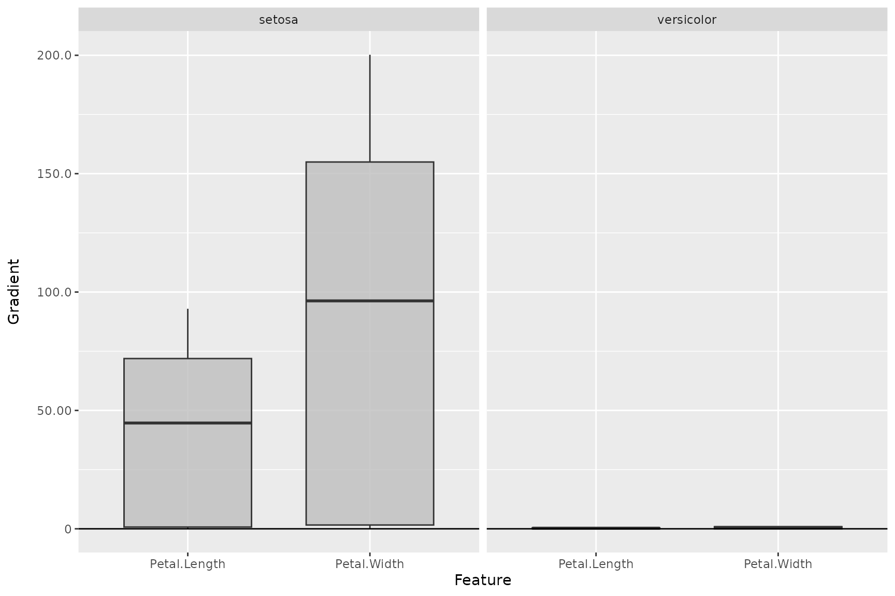

In the last decade, it has been demonstrated in an impressive way how efficiently and successfully neural networks can analyze and understand enormous amounts of data. They can recognize patterns and associations and transfer this knowledge to new data points with remarkable accuracy. Moreover, their flexibility eliminates the feature engineering step that was often necessary before and allows them to work directly with raw data. Nevertheless, these associations and internal findings are hidden somewhere in the black box and it is unclear to the user what the crucial aspects of the prediction are. One way to open the black box is through so-called feature attribution methods. These are local methods that — based on a single data point (image, tabular instance,…) — assign a relevance of a previously defined output class or node to each input variable. In general, only a normal forward pass and a method-specific backward pass are required, making the implementation much faster compared to perturbation- or optimization-based methods like LIME or Occlusion. Figure 1 illustrates the basic approach of the feature attribution methods.

Figure 1: Feature attribution methods
Why innsight?
Of course, we are not the first to provide several feature attribution methods for neural networks in one package. For example, there are several packages for Python, such as iNNvestigate, captum and zennit. Due to the great and extremely efficient deep learning libraries Keras/TensorFlow and PyTorch, it is only reasonable that these are all Python-exclusive. However, in recent years these libraries have been integrated more and more successfully into the R programming language. We fill this lack of feature attribution methods for neural networks in R with our package innsight.

Figure 2: innsight package
In addition to the availability in R, the package is also outstanding for the following aspects:
Deep-learning-library-agnostic: To be as flexible as
possible and available to a range of users, we do not limit ourselves to
models from a particular deep learning library, as is the case with all
Python variants. Using the Converter, each passed model
(from keras, torch or
neuralnet) is first converted into a list with all
relevant information about the model. Then, a
torch-model is created from this list, which has the
available feature attribution methods pre-implemented for each layer. If
our package does not support your favorite library, there is also the
option to do the converting step by yourself and pass a list
directly.
No Python dependency: In R, there are currently two major deep learning libraries, namely keras/tensorflow and torch. However, keras/tensorflow, accesses the corresponding Python methods via the package reticulate. We use the fast and efficient torch package for all computations, which runs without Python and directly accesses the C++ variant of PyTorch called LibTorch (see Fig. 2).
-
Unified framework: It does not matter which model and method you choose, it is always the same three steps that lead to a visual illustration of the results (see the next section for details):
Visualization tools: Our package innsight offers several visualization methods for individual or summarized results regardless of whether it is tabular, 1D signal, 2D image data or a mix of these. Additionally, interactive plots can be created based on the plotly package.
How to use
The following is more of a high-level overview that only explains
some of the details of the three steps. In case you are looking for a
more detailed overview of all configuration options, we refer you to the
vignette
“In-depth explanation” (same as
vignette("detailed_overview", package = "innsight")). The
three steps for explaining individual predictions with the provided
methods are unified in this package and follow a strict scheme. This
will hopefully allow any user a smooth and easy introduction to the
possibilities of this package. The steps are:
# Step 0: Model creation
model <- ... # this step is left to the user
# Step 1: Convert the model
converter <- convert(model)
converter <- Converter$new(model) # the same but without helper function
# Step 2: Apply selected method to your data
result <- run_method(converter, data)
result <- Method$new(converter, data) # the same but without helper function
# Step 3: Show and plot the results
get_result(result) # get the result as an `array`, `data.frame` or `torch_tensor`
plot(result) # for individual results (local)
plot_global(result) # for summarized results (global)
boxplot(result) # alias for `plot_global` for tabular and signal dataStep 1: Model creation and converting
The innsight package aims to be as flexible as
possible and independent of any particular deep learning package in
which the passed network was learned or defined. For this reason, there
are several ways in this package to pass a neural network to the
Converter object, but the call is always the same:
# Using the helper function `convert`
converter <- convert(model, ...)
# It simply passes all arguments to the initialization function of
# the corresponding R6 class, i.e., it is equivalent to
converter <- Converter$new(model, ...)Except for a neuralnet model, no names of inputs or
outputs are stored in the given model. If no further arguments are set
for the Converter instance or convert()
function, default labels are generated for the input
(e.g. 'X1', 'X2', …) and output names
('Y1', 'Y2', … ). In the converter, however,
there is the possibility with the optional arguments
input_names and output_names to pass the
names, which will then be used in all results and plots created by this
object.
Usage with torch models
Currently, only models created by torch::nn_sequential
are accepted. However, the most popular standard layers and activation
functions are available (see the detailed
vignette for details).
📝 Note
If you want to create an instance of the classConverterwith a torch model that meets the above conditions, you have to specify the shape of the inputs with the argumentinput_dimbecause this information is not stored in every given torch model.
Example
library(torch)
library(innsight)
torch_manual_seed(123)
# Create model
model <- nn_sequential(
nn_linear(3, 10),
nn_relu(),
nn_linear(10, 2, bias = FALSE),
nn_softmax(2)
)
# Convert the model
conv_dense <- convert(model, input_dim = c(3))
# Convert model with input and output names
conv_dense_with_names <-
convert(model,
input_dim = c(3),
input_names = list(c("Price", "Weight", "Height")),
output_names = list(c("Buy it!", "Don't buy it!"))
)Usage with keras models
Models created by keras_model_sequential
or keras_model
with the keras package are accepted. Within these
functions, the most popular layers and activation functions are accepted
(see the in-depth
vignette for details).
Example
library(keras)
# Create model
model <- keras_model_sequential()
model <- model %>%
layer_conv_2d(4, c(5, 4), input_shape = c(10, 10, 3), activation = "softplus") %>%
layer_max_pooling_2d(c(2, 2), strides = c(1, 1)) %>%
layer_conv_2d(6, c(3, 3), activation = "relu", padding = "same") %>%
layer_max_pooling_2d(c(2, 2)) %>%
layer_conv_2d(4, c(2, 2), strides = c(2, 1), activation = "relu") %>%
layer_flatten() %>%
layer_dense(5, activation = "softmax")
# Convert the model
conv_cnn <- convert(model)Usage with neuralnet models
The usage with nets from the package neuralnet is
very simple and straightforward, because the package offers much fewer
options than torch or keras. The only
thing to note is that no custom activation function can be used.
However, the package saves the names of the inputs and outputs, which
can, of course, be overwritten with the arguments
input_names and output_names when creating the
converter object.
Usage with a model as a named list
If you have not trained your net with keras, torch or neuralnet, you can also pass your model as a list, i.e., you write your own wrapper for your library. But you have to consider a few points, which are explained in detail in the in-depth vignette.
Example
model <- list(
input_dim = 2,
input_names = list(c("X1", "Feat2")),
input_nodes = 1,
output_nodes = 2,
layers = list(
list(
type = "Dense", weight = matrix(rnorm(10), 5, 2), bias = rnorm(5),
activation_name = "relu", input_layers = 0, output_layers = 2
),
list(
type = "Dense", weight = matrix(rnorm(5), 1, 5), bias = rnorm(1),
activation_name = "sigmoid", input_layers = 1, output_layers = -1
)
)
)
converter <- convert(model)After an instance of the Converter class has been
created, the base print() method can be used to output the
most important components of the object in summary form:
converter
#>
#> ── Converter (innsight) ────────────────────────────────────────────────────────
#> Fields:
#> • input_dim: (*, 2)
#> • output_dim: (*, 1)
#> • input_names:
#> ─ Feature (2): X1, Feat2
#> • output_names:
#> ─ Output node/Class (1): Y1
#> • model_as_list: not included
#> • model (class ConvertedModel):
#> 1. Dense_Layer: input_dim: (*, 2), output_dim: (*, 5)
#> 2. Dense_Layer: input_dim: (*, 5), output_dim: (*, 1)
#>
#> ────────────────────────────────────────────────────────────────────────────────Step 2: Apply selected method
The innsight package provides several tools for
analyzing black box neural networks based on dense or convolution
layers. For the sake of uniform usage, all implemented methods inherit
from the InterpretingMethod super class (see
?InterpretingMethod for details) and differ in each case
only by method-specific arguments and settings. Therefore, each method
has the following initialization structure:
method <- Method$new(converter, data, # required arguments
channels_first = TRUE, # optional settings
output_idx = NULL, # .
ignore_last_act = TRUE, # .
... # other args and method-specific args
)However, you can also use the helper functions (e.g.,
run_grad(), run_deeplift(), etc.) for
initializing a new object:
method <- run_method(converter, data, # required arguments
channels_first = TRUE, # optional settings
output_idx = NULL, # .
ignore_last_act = TRUE, # .
... # other args and method-specific args
)The most important arguments are explained below. For a complete and
detailed explanation, however, we refer to the R documentation (see
?InterpretingMethod) or the vignette “In-depth
explanation”
(vignette("detailed_overview", package = "innsight")).
converter: This is the converter object created in the first step.data: The data to which the method is to be applied. These must have the same format as the input data of the passed model to the converter object. This means either anarray,data.frame,torch_tensoror array-like format of size , if e.g., the model has only one input layer, or alistof the respective input sizes for each of the input layers.channels_first: The channel position of the given data (argumentdata). IfTRUE, the channel axis is placed at the second position between the batch size and the remaining input axes, e.g.,c(10,3,32,32)for a batch of ten images with three channels and a height and width of 32 pixels. Otherwise (FALSE), the channel axis is at the last position, i.e.,c(10,32,32,3). If the data has no channel axis, use the default valueTRUE.output_idx: These indices specify the output nodes or classes for which the method is to be applied. If the model has only one output layer, the values correspond to the indices of the output nodes, e.g.,c(1,3,4)for the first, third and fourth output node. If your model has more than one output layer, you can pass the respective output nodes in a list which is described in detail in the R documentation (see?InterpretingMethod) or in the in-depth vignetteoutput_label: These values specify the output nodes for which the method is to be applied and can be used as an alternative to the argumentoutput_idx. Only values that were previously passed with the argumentoutput_namesin theconvertercan be used.ignore_last_act: Set this logical value to include the last activation functions for each output layer, or not (default:TRUE)
The package innsight now offers the following
methods for interpreting your model. To use them, simply replace the
name "Method" with one of the method’s names below. There
are also method-specific arguments, but these are explained in detail
along with the methods in the R documentation (e.g.,
?Gradient or ?LRP) or in the in-depth
vignette. Let
the input instance,
is the feature index of the input and
the index of the output node or class to be explained:
-
Gradient: Calculation of the model output Gradients with respect to the model inputs including the attribution method GradientInput:Examples
# Apply method 'Gradient' for the dense network grad_dense <- Gradient$new(conv_dense, iris[-c(1, 2, 5)]) # You can also use the helper function `run_grad` grad_dense <- run_grad(conv_dense, iris[-c(1, 2, 5)]) # Apply method 'Gradient x Input' for CNN x <- torch_randn(c(10, 3, 10, 10)) grad_cnn <- run_grad(conv_cnn, x, times_input = TRUE) -
SmoothGrad: Calculation of the smoothed model output gradients (SmoothGrad) with respect to the model inputs by averaging the gradients over number of inputs with added noise (including SmoothGradInput): with .Examples
# Apply method 'SmoothGrad' for the dense network smooth_dense <- run_smoothgrad(conv_dense, iris[-c(1, 2, 5)]) # Apply method 'SmoothGrad x Input' for CNN x <- torch_randn(c(10, 3, 10, 10)) smooth_cnn <- run_smoothgrad(conv_cnn, x, times_input = TRUE) -
IntegratedGradient: Calculation of the integrated gradients (Sundararajan et al. (2017)) with respect to a reference input :Examples
# Apply method 'IntegratedGradient' for the dense network intgrad_dense <- run_intgrad(conv_dense, iris[-c(1, 2, 5)]) # Apply method 'IntegratedGradient' for CNN with the average baseline x <- torch_randn(c(10, 3, 10, 10)) x_ref <- x$mean(1, keepdim = TRUE) intgrad_cnn <- run_intgrad(conv_cnn, x, x_ref = x_ref) -
ExpectedGradient: Calculation of the integrated gradients (Erion et al., 2021) with respect to a whole reference dataset :Examples
# Apply method 'ExpectedGradient' for the dense network expgrad_dense <- run_expgrad(conv_dense, iris[-c(1, 2, 5)], data_ref = iris[-c(1, 2, 5)]) # Apply method 'ExpectedGradient' for CNN x <- torch_randn(c(10, 3, 10, 10)) data_ref <- torch_randn(c(20, 3, 10, 10)) expgrad_cnn <- run_expgrad(conv_cnn, x, data_ref = data_ref) -
LRP: Back-propagating the model output to the model input neurons to obtain relevance scores for the model prediction which is known as Layer-wise Relevance Propagation: with relevance score for input neuron .Examples
# Apply method 'LRP' for the dense network lrp_dense <- run_lrp(conv_dense, iris[-c(1, 2, 5)]) # Apply method 'LRP' for CNN with alpha-beta-rule x <- torch_randn(c(10, 10, 10, 3)) lrp_cnn <- run_lrp(conv_cnn, x, rule_name = "alpha_beta", rule_param = 1, channels_first = FALSE ) -
DeepLift: Calculation of a decomposition of the model output with respect to the model inputs and a reference input which is known as Deep Learning Important Features (DeepLift): with contribution score for input neuron to the difference-from-reference model output .Examples
# Define reference value x_ref <- array(colMeans(iris[-c(1, 2, 5)]), dim = c(1, 2)) # Apply method 'DeepLift' for the dense network deeplift_dense <- run_deeplift(conv_dense, iris[-c(1, 2, 5)], x_ref = x_ref) # Apply method 'DeepLift' for CNN (default is a zero baseline) x <- torch_randn(c(10, 3, 10, 10)) deeplift_cnn <- run_deeplift(conv_cnn, x) -
ConnectionWeights: This is a naive and old approach by calculating the product of all weights from an input to an output neuron and then adding them up (see Connection Weights).Examples
# Apply global method 'ConnectionWeights' for a dense network connectweights_dense <- run_cw(conv_dense) # Apply local method 'ConnectionWeights' for a CNN # Note: This variant requires input data x <- torch_randn(c(10, 3, 10, 10)) connectweights_cnn <- run_cw(conv_cnn, x, times_input = TRUE) -
Additionally, the method
DeepSHAPand the model-agnostic methodsLIMEandSHAPare implemented (by the functionsrun_deepshap(),run_lime()andrun_shap()). For details, we refer to our vignette “In-depth explanation”.
📝 Notes
By default, the last activation function is not taken into account for all data-based methods. Because often, this is a sigmoid/logistic or softmax function, which has increasingly smaller gradients with a growing distance from 0, which leads to the so-called saturation problem. But if you still want to consider the last activation function, use the argument
ignore_last_act = FALSE.For data with channels, it is impossible to determine exactly on which axis the channels are located. Internally, all data and the converted model are in the data format “channels first”, i.e., directly after the batch dimension . In case you want to pass data with “channels last” (e.g., for MNIST-data ), you have to indicate that with argument
channels_firstin the applied method.It can happen with very large and deep neural networks that the calculation for all outputs requires the entire memory and takes a very long time. But often, the results are needed only for certain output nodes. By default, only the results for the first 10 outputs are calculated, which can be adjusted individually with the argument
output_idxby passing the relevant output indices.
Similar to the instances of the Converter class, the
default print() function for R6 classes was also overridden
for each method object, so that all important contents of the
corresponding method are displayed:
smooth_cnn
#>
#> ── Method SmoothGrad (innsight) ────────────────────────────────────────────────
#> Fields (method-specific):
#> • times_input: TRUE (→ SmoothGrad x Input method)
#> • n: 50
#> • noise_level: 0.1
#> Fields (other):
#> • output_idx: 1, 2, 3, 4, 5 (→ corresponding labels: 'Y1', 'Y2', 'Y3', 'Y4',
#> 'Y5')
#> • ignore_last_act: TRUE
#> • channels_first: TRUE
#> • dtype: 'float'
#>
#> ── Result (result) ──
#>
#> ─ Shape: (10, 3, 10, 10, 5)
#> ─ Range: min: -0.24646, median: 0.000167129, max: 0.284328
#> ─ Number of NaN values: 0
#>
#> ────────────────────────────────────────────────────────────────────────────────Step 3: Show and plot the results
Once a method object has been created, the results can be returned as
an array, data.frame, or
torch_tensor, and can be further processed as desired. In
addition, for each of the three sizes of the inputs (tabular, 1D signals
or 2D images) suitable plot and boxplot functions based on ggplot2 are
implemented. Due to the complexity of higher dimensional inputs, these
plots and boxplots can also be displayed as an interactive plotly plots by using
the argument as_plotly.
Get results
Each instance of the interpretability methods has the class method
get_result(), which is used to return the results. You can
choose between the data formats array,
data.frame or torch_tensor by passing the name
as an character for argument type. This method is also
implemented as a S3 method. For a deeper view in this method look this
section in the in-depth vignette.
# Get the result with the class method
method$get_result(type = "array")
# or use the S3 function
get_result(method, type = "array")array (default)
# Get result (make sure 'grad_dense' is defined!)
result_array <- grad_dense$get_result()
# or with the S3 method
result_array <- get_result(grad_dense)
# Show the result for data point 1 and 71
result_array[c(1, 71), , ]
#> , , setosa
#>
#> Petal.Length Petal.Width
#> [1,] -0.09324544 -0.2008985
#> [2,] -97.20391083 -209.4270325
#>
#> , , versicolor
#>
#> Petal.Length Petal.Width
#> [1,] -0.0005318918 -0.001145968
#> [2,] -0.5544717908 -1.194616318
#>
#> , , virginica
#>
#> Petal.Length Petal.Width
#> [1,] 0.004687082 0.01009838
#> [2,] 4.886058807 10.52707481data.frame
# Get result as data.frame (make sure 'lrp_cnn' is defined!)
result_data.frame <- lrp_cnn$get_result("data.frame")
# or with the S3 method
result_data.frame <- get_result(lrp_cnn, "data.frame")
# Show the first 5 rows
head(result_data.frame, 5)
#> data model_input model_output feature feature_2 channel output_node value
#> 1 data_1 Input_1 Output_1 H1 W1 C1 Y1 0
#> 2 data_2 Input_1 Output_1 H1 W1 C1 Y1 0
#> 3 data_3 Input_1 Output_1 H1 W1 C1 Y1 0
#> 4 data_4 Input_1 Output_1 H1 W1 C1 Y1 0
#> 5 data_5 Input_1 Output_1 H1 W1 C1 Y1 0
#> pred decomp_sum decomp_goal input_dimension
#> 1 0.1909436 0.5172616 0.5172629 3
#> 2 0.1270780 0.2318697 0.2318704 3
#> 3 0.2253208 0.6011138 0.6011152 3
#> 4 0.2393590 0.8190562 0.8190582 3
#> 5 0.1498721 0.1812416 0.1812423 3torch_tensor
# Get result (make sure 'deeplift_dense' is defined!)
result_torch <- deeplift_dense$get_result("torch_tensor")
# or with the S3 method
result_torch <- get_result(deeplift_dense, "torch_tensor")
# Show for datapoint 1 and 71 the result
result_torch[c(1, 71), , ]
#> torch_tensor
#> (1,.,.) =
#> 6.1404 0.0350 -0.3087
#> 5.6068 0.0320 -0.2818
#>
#> (2,.,.) =
#> -47.5426 -0.2712 2.3898
#> -59.0470 -0.3368 2.9681
#> [ CPUFloatType{2,2,3} ]Plot results
The package innsight also provides methods for
visualizing the results. By default a ggplot2-plot is
created, but it can also be rendered as an interactive
plotly plot with the as_plotly argument.
You can use the argument output_idx to select the indices
of the output nodes for the plot. In addition, if the results have
channels, the aggr_channels argument can be used to
determine how the channels are aggregated. All arguments are explained
in detail in the R documentation (see ?InterpretingMethod)
or here
for plot() and here
for plot_global().
# Create a plot for single data points
plot(method,
data_idx = 1, # the data point to be plotted
output_idx = NULL, # the indices of the output nodes/classes to be plotted
output_label = NULL, # the class labels to be plotted
aggr_channels = "sum",
as_plotly = FALSE, # create an interactive plot
... # other arguments
)
# Create a plot with summarized results
plot_global(method,
output_idx = NULL, # the indices of the output nodes/classes to be plotted
output_label = NULL, # the class labels to be plotted
ref_data_idx = NULL, # the index of an reference data point to be plotted
aggr_channels = "sum",
as_plotly = FALSE, # create an interactive plot
... # other arguments
)
# Alias for `plot_global` for tabular and signal data
boxplot(...)Examples:📝 Note
The argumentoutput_idxcan be either a vector of indices or a list of vectors of indices but must be a subset of the indices for which the results were calculated, i.e., a subset of the argumentoutput_idxpassed to the respective method previously. By default (NULL), the smallest index of all computed output nodes and output layers is used.
plot() function (ggplot2)
# Plot the result of the first data point (default) for the output classes '1', '2' and '3'
plot(smooth_dense, output_idx = 1:3)
# You can plot several data points at once
plot(smooth_dense, data_idx = c(1, 144), output_idx = 1:3)
plot() function (plotly)
plot_global() function (ggplot2)
# Create boxplot for the first two output classes
plot_global(smooth_dense, output_idx = 1:2)
# Use no preprocess function (default: abs) and plot a reference data point
plot_global(smooth_dense,
output_idx = 1:3, preprocess_FUN = identity,
ref_data_idx = c(55)
)plot_global() function (plotly)
# You can do the same with the plotly-based plots
plot_global(smooth_dense,
output_idx = 1:3, preprocess_FUN = identity,
ref_data_idx = c(55), as_plotly = TRUE
)